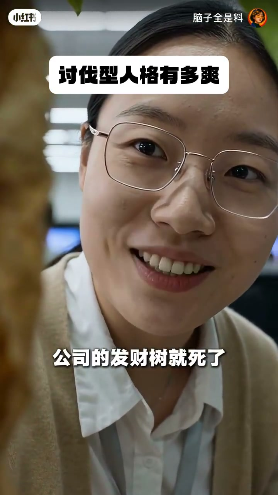

内容要点
「脑子全是料」职场短剧：女主以讨伐型人格回击劝酒、借故请客、查户口式八卦。标题横幅「讨伐型人格有多爽」。Whisper 几乎不可用，对白以画面字幕为准。
知识结构
[00:00→00:12]
劝酒反杀
「喝一口又不会死人」→「你先打个样」。
[00:12→00:28]
请客话术
借发财树/聚餐索请；女主冷回是否也要分成。
[00:28→00:50]
查户口
盯手机型号被回「查户口的」；凑近八卦被面无表情挡回。
总结
短剧配方是「越界话术 → 对等反问」：不解释情绪，只用同一语境的尖锐问题把压力弹回。娱乐向边界示范，现实中需评估关系成本。
00:00-00:28劝酒与请客：压力弹回
同事劝「切喝一口又不会死人」，女主端杯回「你先打个样」。随后有人拿公司发财树死掉等话题催请客，女主以冷脸与对等挖苦接住，不接「必须请客」的道德绑架。
另一同事笑劝「不得请大家吃顿饭」，女主反问「要不要也分你们一点」——把索取话术镜像回击。
[00:04] 同事劝酒「切喝一口又不会死人」，女主端杯回「你先打个样」
A coworker pushes a drink; she lifts her glass and says you demonstrate first.

[00:12] 同事借发财树死掉催请客，女主冷脸接话
A coworker uses the dead money tree to push a meal treat; she answers coldly.
[00:23] 同事讨请客饭局，女主反问「要不要也分你们一点」
A coworker fishes for a dinner treat; she asks if they also want a cut.
00:28-00:50查户口式八卦到收束
有人盯着手机型号惊呼，女主直接定性「查户口的」。男同事凑近问要不要排队凑热闹，女主面无表情反杀，横幅主题「讨伐型人格有多爽」贯穿全片。
整段几乎无旁白讲解，靠对白节奏完成「没分寸 → 被讨伐」的爽感结构。
[00:35] 同事盯手机型号查户口，女主回「查户口的」
A coworker pries about her phone model; she calls it a household registration check.
[00:42] 同事凑近八卦排队，女主面无表情反杀收场
A coworker leans in for gossip; she shuts it down with a blank face.
完整转录（2段）
以下文本由 Whisper medium 模型自动转录，可能存在少量识别误差，已尽可能修正。
我吃了头包不能喝酒
呦还用